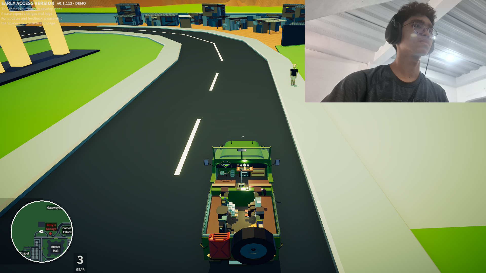
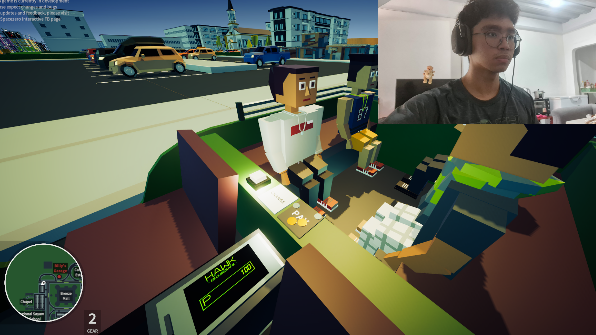
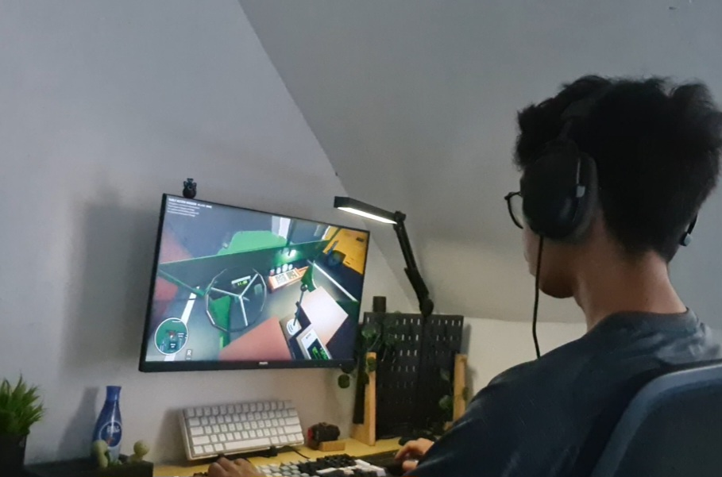

Jeepney Simulator Review

Jeepney Simulator
Score: 7.3
Pros
- Realistic gameplay
- Cultural Experience
- Open world
Cons
- Inaccurate time
- Chore
Full Review
Jeepney Simulator is really accurate and realistic. When i played it, it featured a lot of mechanics you would see in real-life, such as picking up passenger, counting payment and returning their change. Regarding the vehicle it's a bit clanky to operate but overall it's true to its core featuring 3 gears and a reverse with an engine you have to press to turn it.

The graphics is a bit simple but that makes it easier to navigate and play, it's good for casual gaming and really shows us the hardship and difficulty that jeepney drivers experience.


Overall i rate it a 7.3, the game is good and content appropriate, really cheap too but some features are a bit hard to do and a chore such as the payment and change which is accurate in real-life but videogame wise, it's lacking some QoL (Quality of Life) features.